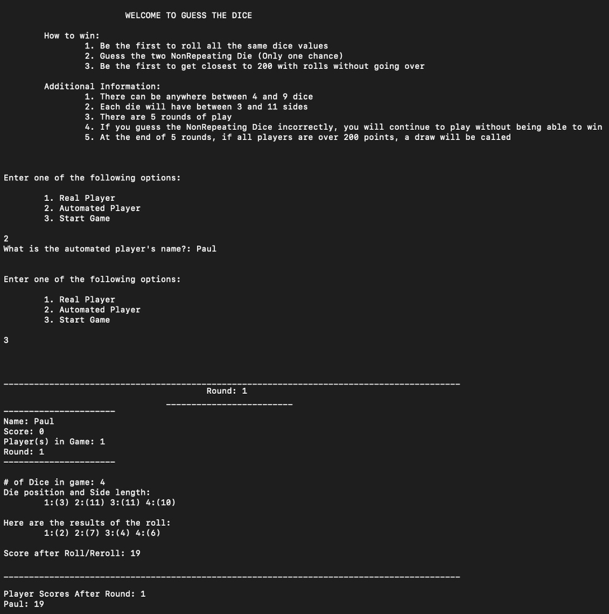
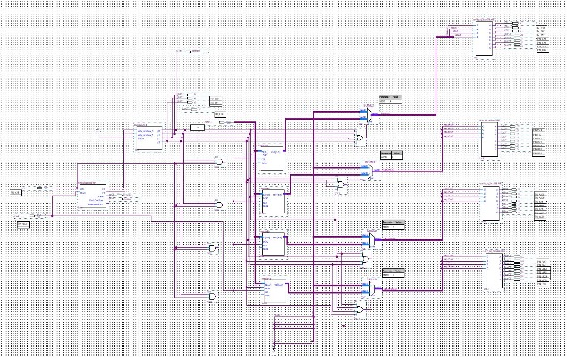

Starkey Intership
In the spring I started interning at Starkey Labs. Working at Starkey has been some the most challenging,
yet rewarding experiences I have had this far in my career. At Starkey, I am a part of a team that works on a proprietary software that fits the hearing aids that
Starkey manufactures.
For development, our team mostly use the Microsoft suite. This includes .Net, Azure Dev Ops, and MSBuild. After starting, it took a few weeks to get trained and aquainted with what I was doing. My first task was to go through one our solutions and fix build warning that showed up on our build pipeline. This gave me an intro to our solution and a feel for how the team checked in code through pull requests. After that I worked on fixing some minor bugs. This gave me a taste of how our backend fit in with the front end solution. I then had several tasks related to our build piplines and DevOps work.
DevOps was something completely new to me. My first task had me dealing with NuGet packages and how our pipeline deployed these packages for consumers. When working on these tasks, I was Googling a lot, combing through Stack Overflow, and becoming familiar with the vast NuGet community. With these tasks I learned to get help from other Engineers who knew what they were doing. Sometimes our DevOps folks would not know how to solve some problems and we would have to work together to figure this out.
For a month or so I worked on restucturing one of our solutions. At first I thought this was be a pretty straightforward task, but it was far from it. The solution started 340 projects/assemblies. All these assemblies would have have to built everytime our solution was being built and it took too much time. I spent a few weeks trimming this down and brough it down to 106 assemblies. This work not included dealing with different file that would be used to install or deploy our solution (.wxs, .msm, and .nuspec). This work also showed me the importance of communicating with other developers and being thorough with my work.
I have now started working on feature work and resolving bugs. We are in an agile environment with two-week sprints. Usually I will get one task that involves working on a feature for a sprint and a bug or two that is assigned for me to look into and fix. I have really enjoyed me time hear. The team that I work with has made my experience really great and has made working a lot better. Working with so many intelligent people has really pushed me to move the bar higher.
Dice Game

One of the most memorable project I have had so far in my Computer Science career was the the "Dice Game" in my Object-Oriented programming class. This is a memorable project
and is at the top of my list, because this was the project that a lot of programming concepts really clicked for me. Many of the OOP concepts that we had been learning
came together in this project and showed me the power of OOP programming. It showed that so many systems are and could be built in a object-oriented manner.
This project taught me a few lessons outside of the OOP principles that I was learning. I learned that explaining my code and walking through it can help me better understand what was going on. I would be explaing and analysing my code to a friend and this would lead me to figuring out something that I had not seen before. This project also showed me that teaching or explaing different concepts to someone else makes my understanding of ideas more solid.
This project really pushed my passion for Computer Science and problem solving to a higher level. I knew that this is the study that I wanted to persue. After this project I understood OOP a lot better, but I also started learning other CS concepts a lot easier. The way that things work together started to click for me. Of course there is much more to learn, this project really got me started on a track that I knew that I would not want to get off.
Stack Implemented on FPGA

Another memorable project I have worked on was implementing a stack data structure on an Field Programmable Gate Array (FPGA). This was a final project for a digital logic
class that I took at Iowa State University. In this class we learning the fundementals of digtial logic, boolean algebra, and simple CPU's. Our final project was intended
for us to put together all the pieces that we had learned through the semester. The image is a schematic of my final project. This is a large overview of highlevel logic that
was used to implement the stack. This final project tested my understanding of registers, register files, and finite state machines.
This project taught me many things along the way in addition to the technical aspect. First this project taught me to start early and work often. I learned that doing this simple thing is much more efficient than alternative work methods. On a related note, this project showed me how to work smarter rather than harder. I could work as hard as I wanted to, but if it did not show results then there was no point. Finally, this project taught me to ask questions. This was the first time in school that I had really felt lost and hit many road block. I used the help of my TA's and Professor to get past these road bloks to make sure I could keep pushing forward.
My detailed write-up of this project can be found here